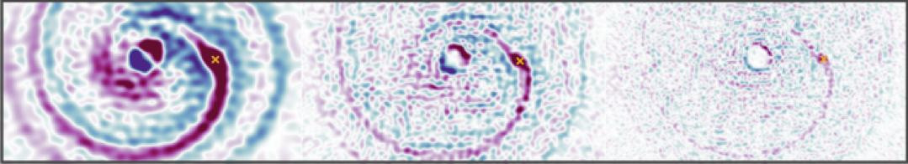
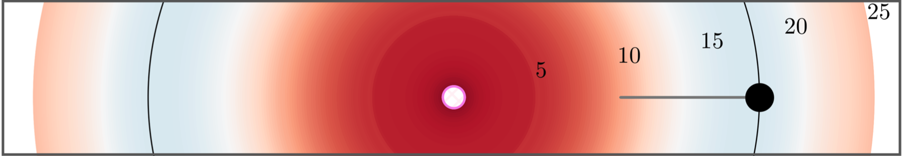
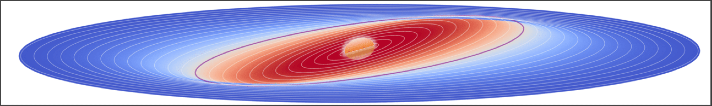
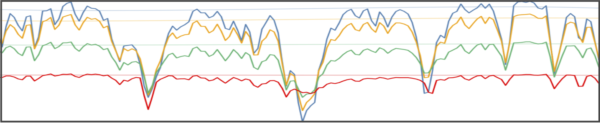
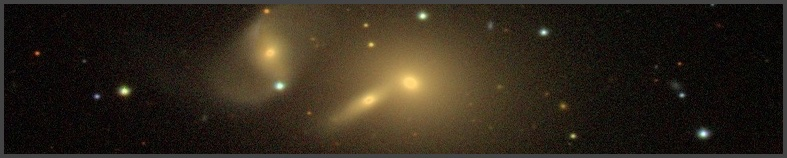
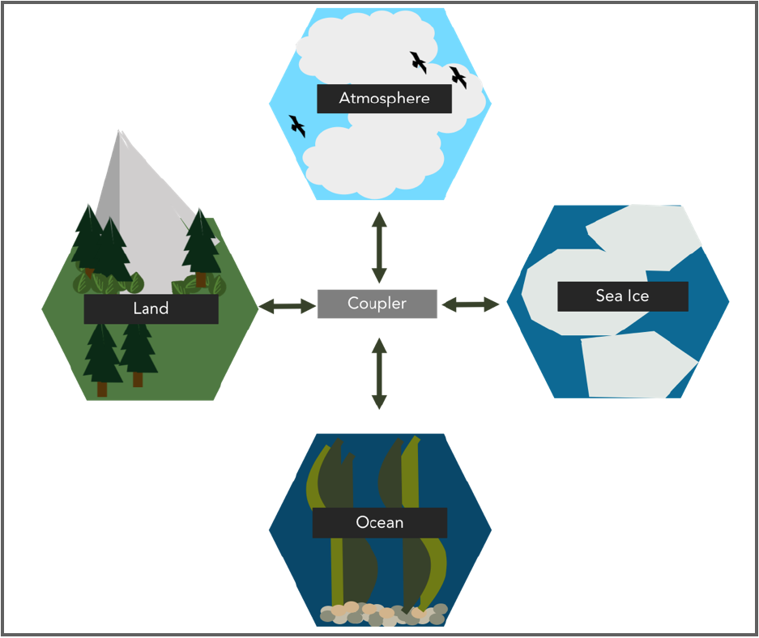
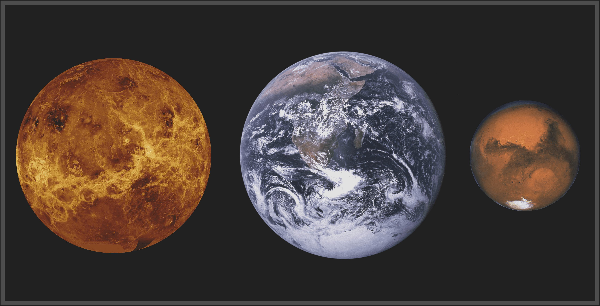
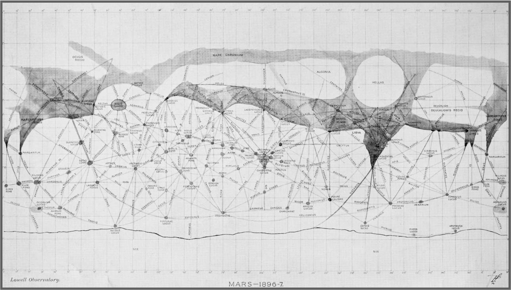

First-author Publications

Observing planet-driven dust spirals with ALMA
ALMA continuum observations of thermal emission from the dust component of protoplanetary disks have revealed an abundance of substructures that may be interpreted as evidence for embedded planets, but planet-driven spiral arms -- perhaps one of the most compelling lines of evidence -- have proven comparatively elusive. In this work, we test the capabilities of ALMA to detect the planet-driven spiral signal in continuum emission. Carrying out hydrodynamic simulations and radiative transfer calculations, we present synthetic Band 7 continuum images for a wide range of disk and observing conditions. We show that thermal mass planets at tens of au typically drive spirals detectable within a few hours of integration time, and the detectable planet mass may be as low as ∼Neptune mass. The grains probed by ALMA form spirals morphologically identical to the underlying gas spiral. The temperature of the dust spiral is crucial in determining its contrast, and spirals are easier to detect in disks with an adiabatic equation of state and longer cooling times. Resolving the spiral is not necessary for its detection; with the help of residual maps, the optimal beam size is a few times the spiral width at a constant noise level. Finally, we show how the presence of gaps and rings can impair our ability to recognize co-located spirals. Our work demonstrates the planet-finding potential of the current design specification of ALMA, and suggests that observing capability is not the bottleneck in searching for spirals induced by thermal mass planets.

Turbulent viscosity and the bifurcation of planet formation histories
ALMA observations of dust ring/gap structures in a minority but growing sample of protoplanetary disks can be explained by the presence of planets at large disk radii - yet the origins of these planets remains debated. We perform planet formation simulations using a semi-analytic model of the HL Tau disk to follow the growth and migration of hundreds of planetary embryos initially distributed throughout the disk, assuming either a high or low turbulent α viscosity. We have discovered that there is a bifurcation in the migration history of forming planets as a consequence of varying the disk viscosity. In our high viscosity disks, inward migration prevails and yields compact planetary systems, tempered only by planet trapping at the water iceline around 5 au. In our lower viscosity models however, low mass planets can migrate outward to twice their initial orbital radii, driven by a radially extended region of strong outward-directed corotation torques located near the heat transition (where radiative heating of the disk by the star is comparable to viscous heating) - before eventually migrating inwards. We derive analytic expressions for the planet mass at which the corotation torque dominates, and find that this "corotation mass" scales as α2/3. If disk winds dominate the corotation torque, the corotation mass scales linearly with wind strength. We propose that the observed bifurcation in disk demographics into a majority of compact dust disks and a minority of extended ring/gap systems is a consequence of a distribution of viscosity across the disk population.

The structure and stability of extended, inclined circumplanetary disk or ring systems
Large dips in the brightness for a number of stars have been observed, for which the tentative explanation is occultation of the star by a transiting circumplanetary disk or ring system. In order for the circumplanetary disk/rings to block the host star's light, the disk must be tilted out of the planet's orbital plane, which poses stability problems due to the radial extent of the disk required to explain the brightness dip durations. This work uses N-body integrations to study the structure and stability of circumplanetary disk/ring systems tilted out of the planet's orbital plane by the spinning planet's mass quadrupole. Simulating the disk as a collection of test particles with orbits initialized near the Laplace surface (equilibrium between tidal force from host star and force from planet's mass quadrupole), we find that many extended, inclined circumplanetary disks remain stable over the duration of the integrations (~3-16 Myr). Two dynamical resonances/instabilities excite the particle eccentricities and inclinations: the Lidov-Kozai effect which occurs in the disk's outer regions, and ivection resonance which occurs in the disk's inner regions. Our work places constraints on the maximum radial extent of inclined circumplanetary disk/ring systems, and shows that gaps present in circumplanetary disks do not necessarily imply the presence of exomoons.

Improved surface gravity and mass constraints for substellar objects from spectral line profile measurements at high resolution in the near-infrared
Observed extra-solar systems within the Milky Way are comprised of stars and substellar objects (planets and brown dwarfs). Standard methods for measuring the mass of isolated brown dwarfs and directly-imaged giant planets are indirect, and rely heavily on largely uncalibrated theoretical models. Consequently, current mass estimates for many of these substellar objects are highly uncertain. With the arrival of new high resolution instruments such as SPIRou comes opportunity for new methods and improved constraints. We present an observational method to constrain the mass of substellar objects precisely, and we demonstrate its feasibility on simulated SPIRou observations. We use a cross correlation technique to find the average shape of the absorption lines in an object’s spectrum, and determine its surface gravity to high precision through quantitative comparison to reference models. The average line profile width has the properties of being dependent on surface gravity and independent on the choice of reference model. Our results suggest that by using the average line profile, surface gravity can be constrained to better than 5%, and mass can subsequently be estimated to a precision of 10-15%. Performing our method on real high-resolution observations will provide the ultimate test.

Star formation and morphology of galaxies in local compact groups
We present a study on the observed properties of galaxies in a large sample of compact groups identified in the Sloan Digital Sky Survey (SDSS). Compact groups are extremely dense collections of galaxies, with 3-8 member galaxies within a very small volume. These systems are known to have frequent galaxy-galaxy interactions. In this work we propose a new definition for the radius of a compact group and match our member galaxies to previous catalogues containing information about the masses, star formation rates and morphologies of these galaxies. We find that both star formation and morphology depend strongly on galaxy stellar mass but more weakly on their host environment: the member galaxy properties show very little radial dependence within their group, but they do depend on their group mass, as traced by the velocity dispersion. Galaxies in compact groups show similar properties to those in non-compact groups, despite being in fundamentally different environments.

Climate Model Diversity: Future Climate Predictions from the CMIP5 Multi-Model Ensemble

Earthism in Planetary Science
- Speedie, J., Simon, C., iSci Class of 2020 (2018).
A chapter appearing in The History of Earth, Volume XIII, a book about Earth history, through the perspective of history of science, written in Feburary 2018 by Level II undergraduate students in McMaster's Honours Integrated Science Program.

The Map that Changed the World of Mars
- Speedie, J. (2018).
Published to Synopsis, a public collection of select blog posts written and critiqued by Integrated Science students at McMaster University. Each post is interdisciplinary in nature, and a wide variety of subject matter is covered.